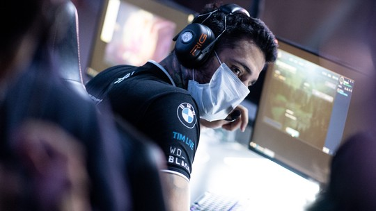

Veja a lista de eventos cancelados por conta do Corona Virus
O cenário competitivo de esportes eletrônicos segue bastante afetado pelo coronavírus. Após a organização Mundial da Saúde declarar o COVID-19 pandemia, cada vez mais eventos estão mudando seus planos.
Ler Mais
CBLoL 2020: tabela de jogos, datas, times e classificação do 1° Split
O 1° Split do Campeonato Brasileiro de League of Legends (CBLoL 2019) começa no dia 25 de janeiro com oito times na disputa pelo título. Atual campeão, o Flamengo defende o título contra uma badalada paiN Gaming que conta com o retorno de Felipe "brTT", INTZ, Redemption, FURIA Uppercut, Prodigy, KaBuM e Vivo Keyd.
Ler Mais